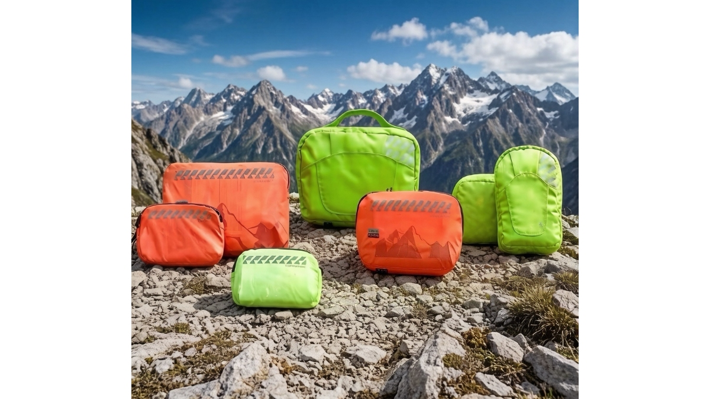

Beyond Blisters: Managing Trail Injuries, Severe Fatigue, and Bad Weather Risks in Wilderness Camping
JUN 18, 2026

When a deep-woods hiking expedition or a mountain adventure goes wrong, it usually doesn't start with an avalanche. It starts with a simple physical injury that gets worse over time.
For camping organizers, outdoor gear retailers, and youth adventure clubs, forgetting about structural trail injuries like severe ankle sprains or crushed toes is a major blind spot. If a guide or a customer gets a bad injury or suffers from extreme exhaustion miles away from the nearest road, a simple trip can quickly turn into a costly rescue emergency.
To keep everyone safe, wholesale buyers and brand managers need to look beyond basic skin bandages and invest in real, heavy-duty first aid support.
The Downhill Struggle: Crushed Toes and Joint Strains
While blisters happen on the surface, the heavy weight of a camping backpack places immense pressure on a hiker's muscles and bones. This danger peaks during long, steep downhill walks on rocky trails.
As a hiker walks downhill, gravity forces their foot forward inside the boot with every single step. This constant, hard bumping causes the toes to repeatedly smash into the front toe box of the shoe. This leads to nail trauma—severe bruising under the toenail, leading to painful "black toenails" or even loose nails.
When a hiker feels this sharp pain, they naturally start limping or changing how they walk to protect their toes. This uneven walking style immediately overloads their ankles and knees. On a loose gravel trail or slippery mud, an unstable ankle is the perfect recipe for a severe joint sprain or a torn ligament.
The Danger of Extreme Fatigue and Sudden Bad Weather
Severe fatigue on a long adventure trek is a genuine safety hazard. When hikers exhaust their physical energy from climbing tough ridges, their bodies stop generating enough natural heat.
If a team member is completely exhausted, a sudden drop in mountain temperature or a cold rainstorm can easily trigger hypothermia (dangerously low body temperature). When a hiker gets too cold, they lose coordination, start shivering uncontrollably, and can easily slip, fall, and sustain a bad bone fracture. In remote wilderness areas, an injured, freezing hiker who cannot walk means the whole group is stuck in danger.
B2B Insight: Provide Real Field Support When It Matters Most
A basic, cheap first aid kit is completely useless when dealing with a broken bone, a severely twisted ankle, or a freezing, shivering hiker. You cannot treat a broken limb or a body-temperature crisis with a small plastic band-aid.
For professional B2B buyers and outdoor businesses, equipping your teams or inventory with high-grade safety gear is the best way to avoid operational liability and protect your clients.
This is where the direct product design of the GoSafeMed Standard and Plus Outdoor Series makes a massive difference for your supply chain:
- High-Tensile Elastic Bandages (7.5cm*4.5m - Standard & Plus): When a hiker twists their ankle on a rough trail, our professional Elastic Bandage allows guides to wrap the joint tightly right away. This gives firm, physical support to the ankle—almost like temporary ligaments—preventing a minor strain from turning into a full tear and letting them walk back to camp.
- Professional 18-Inch Polymer Splint & Triangular Bandage (Plus Exclusive): For severe falls or broken bones far from emergency services, our Plus model includes a real 18-inch Polymer Splint paired with our Triangular Bandage. This specialized material is lightweight and flexible when flat, but becomes incredibly strong and rigid when curved around a broken arm or leg. It locks the broken limb perfectly in place to prevent further nerve damage during transport.
- Oversized Emergency Blanket (1.6m*2.1m): To fight sudden cold weather and hypothermia, every kit in our line contains a large, medical-grade Emergency Blanket. This heavy-duty foil reflects up to 90% of a person's radiated body heat back to them, keeping them warm even when their body is too tired to shake.
- Instant Cold Packs & Digital Tracking (Plus Exclusive): Our Plus series features an Instant Cold Pack—just squeeze it once to activate immediate, ice-cold relief that stops swelling and numbs joint pain on the spot. It also includes a Digital Thermometer, giving guides a reliable tool to check a sick hiker's temperature with clear data.
Conclusion: Secure Your Team's Outdoor Infrastructure
In the high-end B2B outdoor market, professional companies are judged by how they prepare for the worst. Moving your inventory or fleet equipment from basic bandages to advanced, heavy-duty support proves your commitment to absolute safety.
Protect your hiking groups, eliminate safety risks, and build a reliable supply chain. Explore the GoSafeMed Standard & Plus Outdoor Series today.